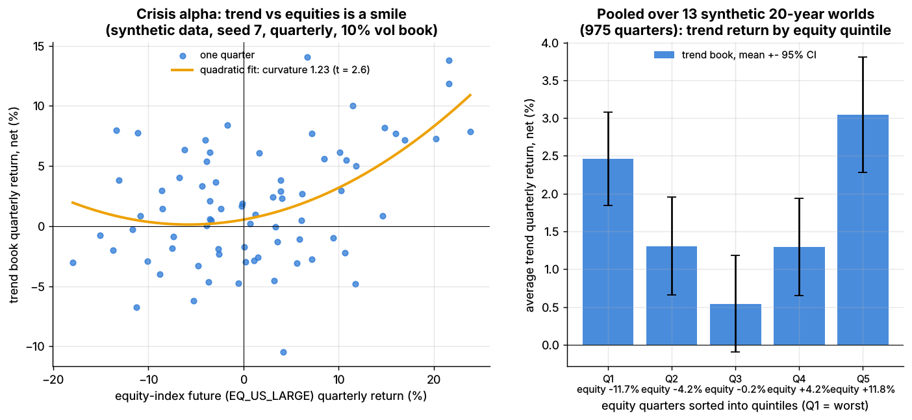

Trend following and CTAs¶
TL;DR
- Time-series momentum: long futures that have risen, short those that have fallen, across 50–150 markets at equal risk.
- Long evidence: persistence in all 58 futures Moskowitz, Ooi and Pedersen tested, and positive returns in every decade since 1880
[Verified].- Convex payoff: bleeds in chop, earns in long moves ("crisis alpha"), loses on V-shaped reversals.
- Live returns trail backtests: the SG Trend Index made +27.4% in 2022, −4.2% in 2023, +2.4% in 2024 and 2025, +15.8% in 2026 to September
[Reported].- For an equity quant: a diversifier, a source of index-futures flow, and the textbook case of volatility targeting.
Level: Core · Read time: ~9 min · Last verified: 2026-11
| Field | Value |
|---|---|
| Family | futures and macro context |
| Edge source | behavioral · risk premium (hedging pressure) |
| Holding period | weeks to months (1–12-month lookbacks) |
| Counterparty: who pays and why they accept it | Hedgers laying off price risk, who lose to trend-following speculators (Moskowitz et al.) [Verified]; central banks; investors who under-react, then chase. None trade on the trend itself. |
| Universe & instruments | Equity-index, bond, short-rate, currency and commodity futures; FX forwards |
| Data required | Daily settlements, roll calendars, margin rates |
| Core algorithms used | P7 Position sizing and risk budgeting · D3 Signal transforms · P1 Risk models · P6 Multi-period optimization and trading toward the aim |
| Infra intensity | Low latency sensitivity; daily batch; roll and execution algorithms at size |
| Capacity (rough $ range) | Tens of billions per manager [Estimate]; industry $354B (Q2 2026, BarclayHedge) [Reported]; at $280B in 2014, trend followers held about 0.2% of equity and 6% of commodity market size [Verified] |
| Typical Sharpe (gross vs net) | Backtests: above 1.0 gross, 1985–2009 [Verified]; 0.77 net of costs and fees, 1880–2013, 0.62 in 2000–2013 [Verified]. Live SG Trend Index since 2000: 5.75% a year, maximum drawdown 20.6% [Reported]. Realistic net 0.3–0.6 [Estimate] |
| Turnover | Notional 50–150× NAV a year in rate-heavy books [Estimate] (Lab 19: 141×) |
| Main risks / failure modes | Whipsaw, V-shaped reversals, hidden correlation, roll costs |
| Crowding risk | Moderate: large managers run similar models (correlation 0.95 with a ~50-program peer index) [Reported] |
| Firm types that run it | CTAs, multi-asset quant managers, multi-strategy platforms; SG Trend Index constituents in 2025–2026 have included Winton, Systematica and PIMCO [Reported] |
| Lab | Lab 19 |
Intuition (the story in plain English)¶
A CTA running trend following never asks why oil is rising. It assumes that what has moved for months keeps moving, because the people moving it adjust slowly. Each market is a slightly biased coin; sixty of them, sized so none dominates, behave like cheap options on big moves.
Economic rationale: why should this make money at all?¶
- Under-reaction, then over-reaction. Returns persist for 1–12 months and partially reverse later (Moskowitz et al.)
[Verified]. - Hedging pressure. In CFTC data, speculators ride time-series momentum and hedgers take the other side
[Verified]; Hurst et al. add central banks and other non-profit-seeking traders[Verified]. - Not a crash premium. Returns peak when equity markets are most extreme, either way, like a lookback straddle (Fung & Hsieh 2001)
[Verified]; a strategy that pays in crises is hard to call risk compensation.
The trade, step by step¶
- Data: back-adjusted contracts.
- Signal (D3): average sign of each market's own 1-, 3- and 12-month return.
- Risk (P1): exponentially weighted volatilities and correlations.
- Size (P7): equal risk per asset class, inverse volatility within it, a 10% volatility target for the book.
- Trade (P6) only outside a no-trade buffer; roll before expiry; keep collateral in Treasury bills.
Worked example with numbers¶
Illustrative: $1B book, each market sized to about 2.5% of NAV standalone volatility.
| Market | Ex-ante vol | Signal | Position (notional / NAV) | Notional |
|---|---|---|---|---|
| 2-year Treasury future | 2% | −1 | −2.5 / 2 = −125% | −$1.25B |
| 10-year Treasury future | 6% | −1 | −2.5 / 6 = −42% | −$417M |
| S&P 500 future | 16% | +1/3 | +1/3 × 2.5 / 16 = +5.2% | +$52M |
A trending quarter. Bond prices fall 1.5% (2-year) and 4% (10-year); equities fall 10%. P&L: 1.25 × 1.5% + 0.417 × 4% − 0.052 × 10% = +3.0% of NAV (+$30M); the weak equity signal cost little.
A reversal day. Bonds rally 1.0% and 1.5%: 1.25 × 1.0% + 0.417 × 1.5% = −1.9% of NAV in a day. Low-volatility rate futures carry the most notional.
Signals and algorithms under the hood¶
Cards: D3 signal; P1 and P2 risk; P7 and P4 sizing; P6 buffer; P5 costs. Code as in Lab 19:
import numpy as np
def tsmom_signal(returns, lookbacks=(21, 63, 252)):
"""Average sign of each market's OWN past 1-, 3-, 12-month return: -1, -1/3, +1/3 or +1."""
votes = [np.sign(returns.rolling(L).sum()) for L in lookbacks]
return sum(votes) / len(lookbacks) # known at the close of day t
def vol_target_positions(signal, ann_vol, corr, asset_class, target_vol=0.10, asset_cap=0.40):
"""Notional / NAV per market: equal risk per class, inverse vol inside it, book at target vol."""
classes, counts = np.unique(asset_class, return_counts=True)
n_in_class = dict(zip(classes, counts))
budget = np.array([1.0 / (len(classes) * n_in_class[c]) for c in asset_class])
w = signal * budget / ann_vol # a 2%-vol bond gets 20x a 40%-vol gas future
port_vol = np.sqrt(w @ (corr * np.outer(ann_vol, ann_vol)) @ w)
if port_vol > 0:
w = w * target_vol / port_vol # scale the whole book to 10% ex-ante vol
cap = asset_cap * target_vol / ann_vol # no market above 4% of NAV standalone vol
return np.clip(w, -cap, cap)
def trade_with_buffer(target, current, band):
gap = target - current # trade only if the target leaves the band,
return np.where(np.abs(gap) > band, target - np.sign(gap) * band, current) # to its edge

Same forecast, three sizing schemes, 24 synthetic futures: the vol-targeted book holds risk near 10%; equal notional swings from 5% to 17%. Synthetic data.
Synthetic lab result: net Sharpe 0.72 (0.84 gross) at 9.8% realized volatility; the buffer cuts turnover from 252× to 141× NAV and lifts net Sharpe from 0.59. That sits near academic backtests and above the realistic 0.3–0.6 net: the toy has no fees, crises or capacity limits.
Implementation choices that matter¶
- Speed. Fast signals lose more to costs: synthetic lab result 0.52 gross to 0.36 net at 1 month, 0.88 to 0.82 at 12. Managers blend speeds because trend lengths are unknown.
- Risk budgets. Under equal notional, commodities and equities carry 92% of risk (synthetic lab result).
- Contracts. Short-rate futures need huge notional; position limits bind in small commodities
[Lore].
P&L decomposition¶
Illustrative, $1B, 10% volatility, % of NAV a year:
| Line | % of NAV |
|---|---|
| Trend P&L: rates | +1.8 |
| Trend P&L: equity indices | +1.6 |
| Trend P&L: currencies | +1.0 |
| Trend P&L: commodities | +1.6 |
| Slippage and rolls | −1.1 |
| Management fee | −1.0 |
| Performance fee (20%) | −0.8 |
| Net excess return (Sharpe ≈ 0.3) | +3.1 |
| Treasury-bill interest on collateral (not alpha) | +4.0 |
Evidence¶
- Moskowitz, Ooi and Pedersen (2012): time-series momentum in all 58 futures; diversified Sharpe above 1, about 2.5× the equity market's, before costs
[Verified]. - Hurst, Ooi and Pedersen: 1880–2013, 14.9% a year gross, 11.2% after 2-and-20 fees, 9.7% volatility, correlation to US equities 0.00; positive in 8 of the 10 worst 60/40 drawdowns
[Verified]. - Live: the SG Trend Index tracks the ten largest trend CTAs, net of fees (figures in the TL;DR)
[Reported].

Quarterly trend returns against equity returns form a smile: gains in both tails. Synthetic data.
Synthetic lab result: curvature +1.23 (t = 2.6); in the worst 10% of equity quarters (mean −13.4%) the book made +0.8%.
Capacity, crowding and decay¶
Futures markets are deep, so capacity rarely binds; decay does. The backtest earned 11% net a year; the live index compounds at about 6% including cash interest. From 2008 to 2014, "risk-on/risk-off" correlation left fewer independent trends [Verified].
How it fails¶
- Choppy years. 2016: −6.19%, the index's first losing year since 2012
[Reported]. - V-shaped reversals. March 2023: −7.69%; 10 and 13 March, when the regional-bank crisis squeezed short bond positions, were two of the index's worst days ever (AlphaSimplex)
[Verified]. April 2025: −4.89%, −9.33% year to date[Reported]. - Fast crashes. A 1987-style crash arrives before signals flip (Hurst et al.)
[Verified].
Textbook vs how it's done today¶
| Textbook | Practice today |
|---|---|
12-month sign, monthly, 40% volatility per market [Verified] |
Blended speeds, daily rebalancing with buffers [Lore] |
| Equal risk per market | Class budgets, correlation-aware scaling [Lore] |
| ~60 markets | 100–300+, including "alternative" markets [Lore] |
| Pure trend, 2-and-20 | Trend plus carry, lower fees [Lore] |
Variants and neighbours¶
Cross-sectional momentum ranks assets against each other; carry is the usual partner; short-term CTAs hold for days.
Why an equity quant should care. Trend diversifies equity books; vol-targeted trend books sell index futures into falling, volatile markets, a flow sell-side desks estimate daily [Lore]; and the sizing machinery is reused in equity factor books.
Diagram¶
flowchart LR
px["Daily settlements,<br/>60+ futures"] --> sig["Signal: average sign of<br/>1, 3, 12-month returns"]
px --> risk["EWMA vols and<br/>correlations"]
sig --> size["Equal risk per class,<br/>inverse vol, 10 pct target"]
risk --> size
size --> buf["No-trade buffer"]
buf --> ex["Execute near close,<br/>roll contracts"]
ex --> pnl["P and L: convex in<br/>big moves, bleeds in chop"]
pnl --> pxflowchart TD
a["Long, gradual bear market"] --> b["Signals flip short<br/>after initial decline"]
b --> c["Gains as the decline continues:<br/>crisis alpha"]
d["Sudden V-shaped reversal"] --> e["Book fully short<br/>when prices jump"]
e --> f["Large one-day loss<br/>before signals adjust"]How practitioners talk about it¶
- "We're long convexity." → Trend pays in big moves either way.
- "Trend got chopped up." → Whipsaw losses.
- "SVB weekend took out the bond short." → The March 2023 reversal.
- "Ten vol, risk-balanced across sectors." → 10% target, class budgets.
- "Our speed blend is 1-3-12." → Lookbacks in months.
- "CTAs are max short; watch the triggers." → Price levels where trend models flip.
Myths vs reality¶
| Myth | Reality |
|---|---|
| Trend always wins in crises | Only gradual ones; fast crashes and V-reversals hurt |
| 4× notional is reckless | Notional is large; risk is about 10% volatility |
| "Trend is dead" | Said after 2016 and 2023; 2022 was the best year |
Questions you could ask a quant about this¶
Basic
- Which speeds do you blend, and why?
- Which markets bind on capacity?
Informed
- How did your bond book handle 10–13 March 2023?
- Standalone volatility or risk contribution for sizing?
Sharp
- How much of your Sharpe is trend versus carry? 🔒
- How do you cap notional in short-rate futures? 🔒
Go deeper¶
Math: time-series momentum return, diversification and the smile
For market \(i\) with signal \(s_{i,t} \in [-1, 1]\), ex-ante volatility \(\sigma_{i,t}\) and target \(\sigma^*\):
With \(N\) markets at equal risk, single-market Sharpe \(S\) and average correlation \(\rho\):
The smile: regress quarterly trend returns on equity returns and their square; the square's coefficient \(c\) is positive.
Related pages¶
- Carry and cross-asset risk premia
- Momentum
- P7 Position sizing and risk budgeting
- How firms combine strategies
- ETF, futures and options linkages
- Strategy failure gallery
Sources¶
- [Verified] Moskowitz, T. J., Ooi, Y. H. & Pedersen, L. H. (2012). "Time series momentum." Journal of Financial Economics 104(2), 228–250. https://doi.org/10.1016/j.jfineco.2011.11.003 (accessed 2026-11)
- [Verified] Hurst, B., Ooi, Y. H. & Pedersen, L. H. (2017). "A Century of Evidence on Trend-Following Investing." The Journal of Portfolio Management 44(1), 15–29. https://doi.org/10.3905/jpm.2017.44.1.015 (accessed 2026-11)
- [Verified] Hurst, B., Ooi, Y. H. & Pedersen, L. H. (2014). "A Century of Evidence on Trend-Following Investing." AQR Capital Management white paper, 1880–2013 statistics (Exhibit 1) and capacity estimates. https://www.trendfollowing.com/whitepaper/Century_Evidence_Trend_Following.pdf (accessed 2026-11)
- [Verified] Fung, W. & Hsieh, D. A. (2001). "The Risk in Hedge Fund Strategies: Theory and Evidence from Trend Followers." Review of Financial Studies 14(2), 313–341. https://doi.org/10.1093/rfs/14.2.313 (accessed 2026-11)
- [Verified] Kaminski, K. M. & Sun, J. (2024-01). "Themes of 2023." AlphaSimplex Group research note. https://www.alphasimplex.com/assets/files/2024.01---themes-of-2023---kaminski-and-sun.pdf (accessed 2026-11)
- [Reported] Hedgeweek (2023-01-10). "Flat December sees CTAs complete record year in 2022" (Societe Generale index data). https://www.hedgeweek.com/flat-december-sees-ctas-complete-record-year-2022/ (accessed 2026-11)
- [Reported] Institutional Investor (2017-01-12). "CTAs Suffer Another Quarterly Setback" (SG Trend Index 2016). https://institutionalinvestor.com/article/b18bk2lsz07myp/ctas-suffer-another-quarterly-setback (accessed 2026-11)
- [Reported] Top Traders Unplugged (2024-01-20). "Trend Following Performance Report – December 2023." https://www.toptradersunplugged.com/trend-following-performance-report-december-2023/ (accessed 2026-11)
- [Reported] Top Traders Unplugged (2025-01-22). "Trend Following Performance Report – December 2024." https://www.toptradersunplugged.com/trend-following-performance-report-december-2024/ (accessed 2026-11)
- [Reported] Top Traders Unplugged (2025-05-20). "Trend Following Performance Report – April 2025." https://www.toptradersunplugged.com/trend-following-performance-report-april-2025/ (accessed 2026-11)
- [Reported] Top Traders Unplugged (2026-01-23). "Trend Following Performance Report – December 2025" (SG Trend Index 2025 return and constituents). https://www.toptradersunplugged.com/?p=20381 (accessed 2026-11)
- [Reported] Top Traders Unplugged (2026-10-26). "Trend Following Performance Report – September 2026" (year-to-date, since-2000 CAGR and drawdown, 2026 constituents). https://www.toptradersunplugged.com/trend-following-performance-report-september-2026/ (accessed 2026-11)
- [Reported] BarclayHedge (ION Analytics). "CTA Industry Assets Under Management" (Q2 2026). https://ionanalytics.com/barclayhedge/solutions/assets-under-management/cta-industry-assets-under-management/ (accessed 2026-11)